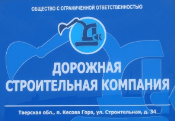
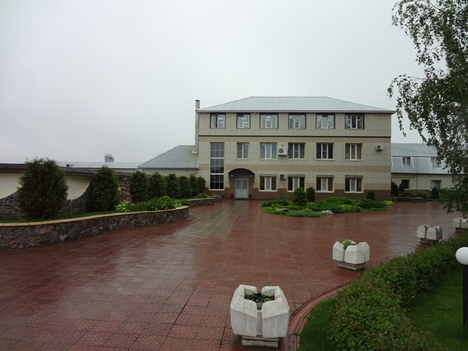

Строительная фирма ООО «Дорожная Строительная Компания» - краткое название ООО «ДСК» была учреждена 24 января 2003 года ОГРН № 1036906000922 от 24.01.2003 года (лицензия ГС-1-69-02-27-0-6926002165-002477-1 от 20.02.2006 г.) ООО «ДСК» является членом НП СРО «Межрегиональное объединение организаций железнодорожного строительства», от которого получено Свидетельство о допуске к работам, которые оказывают влияние на безопасность объектов капитального строительства СРО № 109690074-08, выданное НП СРО "МООЖС" и свидетельство СРО № СРО-С-14-6926002165 099, выданное НП СРО "РОССО-ДОРМОСТ". Так же ООО «ДСК» имеет свидетельства СРО о допуске к выполнению проектных работ № 0683-2011-6926002165-02,выданное НП СРО "БОП", и свидетельство СРО о допуске к работам по проведению инженерных изысканий Свидетельство СРО № 0199-2010-6926002165-01, выданное НП СРО "БОИ". Организация осуществляет полный комплекс строительно-монтажных работ при строительстве автомобильных дорог, возведении насыпей для различных строительных сооружений, осуществляет комплекс железобетонных и бетонных работ и т.д., при этом имеет право выполнять функции Генподрядчикa.
 